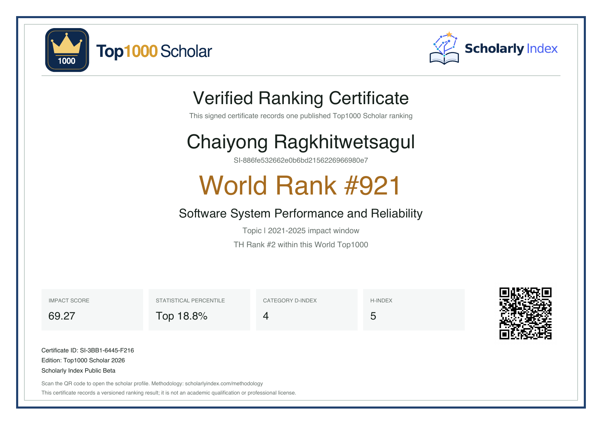

News
All updates
- Nov 2026Two papers accepted at QuASoQ 2026 (International Workshop on Quantitative Approaches to Software Quality, co-located with APSEC 2026):
- Quantifying the Resolved Tasks and Cost That Test Feedback Adds to LLM-Based Program Repair
- Generating npm Library Descriptions from Package Names with LLMs: An Empirical Study
- Oct 2026Four papers accepted at APSEC 2026 (Asia-Pacific Software Engineering Conference):
- Which Link Should I Look At First?: Automated Link Ranking in Code Reviews (technical track)
- Early Adoption, Use, and Maintenance of the Agent Package Manager in Open-Source Software (ERA track)
- ImReq: An LLM-Powered Tool for Assessing and Improving Software Requirements Quality (tool demo track)
- Generative Coding in the Wild: Exploring the Diversity of GenAI on GitHub (posters track)
- Oct 2026Dr. Chaiyong Ragkhitwetsagul is ranked #921 in the world (#2 in Thailand) in Software System Performance and Reliability in the Top1000 Scholar 2026 ranking by Scholarly Index (certificate).

- Oct 2026CURSOR is established at the Faculty of Engineering, Chulalongkorn University.
- 2026Now recruiting graduate and undergraduate students across all three research threads.